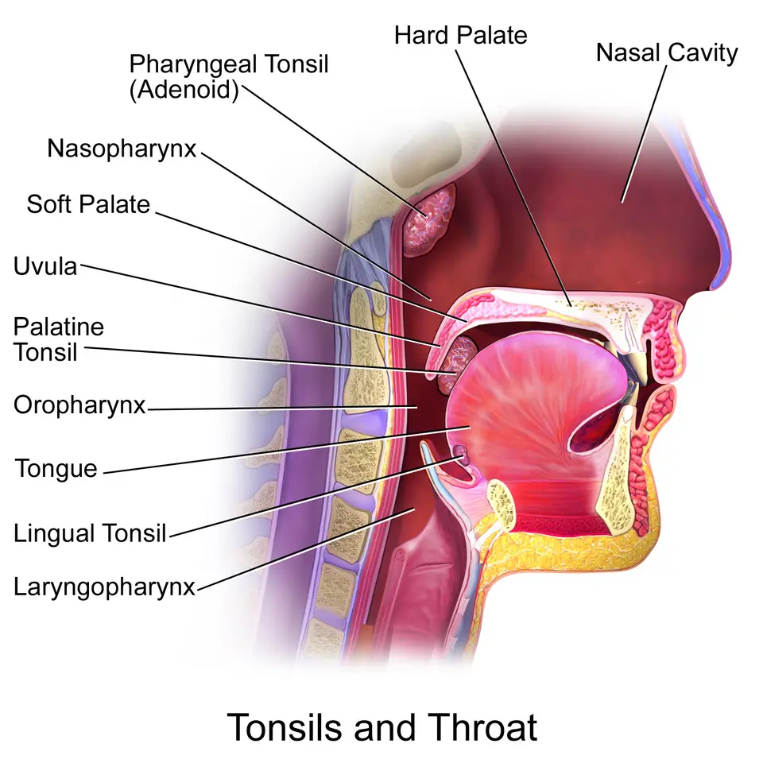

DX.10 — Carcinome épidermoïde oropharyngé
Une otalgie avec oreille normale qui dure plus de 3 semaines, surtout chez un fumeur, impose un examen oto-rhino-laryngologique (ORL) complet S1. Le diagnostic repose sur la biopsie et le test p16, puis le traitement suit le stade, avec la chimioradiothérapie au cisplatine pour les formes avancées S5.
1. Définition
Le carcinome épidermoïde oropharyngé est une tumeur maligne née de la muqueuse de l’oropharynx, qui comprend notamment l’amygdale palatine et la base de la langue S1S2S14. La recommandation européenne le divise en deux entités distinctes, l’une induite par le tabac et l’alcool, l’autre liée au papillomavirus humain (HPV) S5.
2. Épidémiologie (Suisse, puis Europe)
En Suisse, l’Office fédéral de la statistique (OFS) compte chaque année environ 790 nouveaux cancers de la cavité buccale et du pharynx chez l’homme et 370 chez la femme S2. Le tableau suisse détaille ces chiffres, la comparaison européenne situe la Suisse, les facteurs de risque expliquent la prédominance masculine, et la comparaison des deux entités oppose l’âge et le pronostic S1S2S5. Dans une cohorte de Saint-Gall, 26 carcinomes oropharyngés sur 49, soit 53 %, étaient liés au HPV S4.
Cancer de la cavité buccale et du pharynx en Suisse : chiffres clés
| Indicateur, moyenne 2013–2017 | Hommes | Femmes | Source |
|---|---|---|---|
| Nouveaux cas par an | 791 | 372 | S2 |
| Décès par an | 307 | 127 | S2 |
| Part de tous les cancers | 3,4 % | 1,9 % | S2 |
| Taux standardisé pour 100 000 habitants | 15,3 | 6,4 | S2 |
| Âge médian au diagnostic | 65,2 ans | 67,2 ans | S2 |
| Risque sur la vie entière | 1,6 % | 0,7 % | S2 |
| Survie relative à 5 ans | 53,9 % | 62,9 % | S2 |
| Personnes vivant avec un diagnostic de moins de 10 ans, estimation 2021 | 4170 | 2300 | S2 |
Le cancer est 2,4 fois plus fréquent chez l’homme, et ses taux d’incidence et de mortalité sont beaucoup plus élevés en Suisse romande et au Tessin qu’en Suisse alémanique S2. Chez l’homme, l’incidence a baissé d’environ 23 % entre 1988 et 2017, tandis que chez la femme elle a progressé de 28 % jusqu’en 2007 S2.
Ces chiffres regroupent lèvre, bouche, glandes salivaires, amygdale, langue et pharynx ; l’OFS ne publie pas de chiffre propre à l’oropharynx dans ce chapitre S2.
Facteurs de risque et leur poids
| Facteur | Effet décrit | Source |
|---|---|---|
| Tabac et alcool, surtout les alcools forts | Principaux facteurs de risque, majorés lorsqu’ils sont associés | S2 |
| Tabac et alcool | Origine de la majorité des carcinomes épidermoïdes de la sphère ORL selon le Centre hospitalier universitaire vaudois (CHUV) | S1 |
| Papillomavirus humain à haut risque, surtout type 16 | Cause croissante du cancer oropharyngé | S2S5 |
| Surcharge pondérale, reflux gastro-œsophagien | Facteurs de risque supplémentaires | S2 |
| Mauvaise hygiène buccale, irritation chronique par une dent ou une prothèse | Facteurs de risque supplémentaires | S2 |
| Mastication de tabac ou de bétel | Facteur de risque supplémentaire | S2 |
Le CHUV indique ainsi que la majorité des carcinomes épidermoïdes de la sphère ORL est liée au tabac et à l’alcool S1. Ce lien explique que le CHUV propose une consultation de tabacologie et un soutien sur la consommation d’alcool dans le même parcours S1.
Situer la Suisse en Europe
| Comparaison | Position de la Suisse | Source |
|---|---|---|
| Incidence chez l’homme | Quatrième rang des pays comparés, dans la moyenne supérieure européenne ; la France est en tête | S2 |
| Incidence chez la femme | Milieu du groupe ; cinq pays ont des taux inférieurs | S2 |
| Mortalité chez l’homme | Cinquième taux le plus bas | S2 |
| Mortalité chez la femme | Quatrième taux le plus haut | S2 |
| Survie à 5 ans, période 2000–2007 | Moyenne supérieure des pays européens comparés | S2 |
| Tendance de la mortalité masculine | Baisse de 39 % entre 1988 et 2017 | S2 |
En Europe, la forme liée au HPV reste rare en dehors de l’oropharynx, avec moins de 6 % des cas, ce qui fait de l’oropharynx le sous-site viral par excellence S5.
Deux entités : tabac et alcool, ou HPV
| Caractère | Carcinome lié au HPV | Carcinome non lié au HPV | Source |
|---|---|---|---|
| Âge médian au diagnostic | 53 ans | 66 ans | S1 |
| Terrain | Plus jeune, pronostic à long terme meilleur | Tabac et alcool | S5 |
| Pronostic | Nettement meilleur | Moins bon | S5 |
| Marqueur | p16 positif à l’immunohistochimie | p16 négatif | S5 |
| Part à Saint-Gall | 26 sur 49, soit 53 % | 23 sur 49, soit 47 % | S4 |
| Génotype dominant à Saint-Gall | HPV 16 dans 85 % des tumeurs liées au HPV | Sans objet | S4 |
| Traitement | Identique à la forme non liée au HPV | Identique | S5 |
La recommandation européenne insiste : le meilleur pronostic de la forme liée au HPV ne justifie aucune désescalade thérapeutique en dehors des essais S5.
3. Physiopathologie
La tumeur naît de la muqueuse ; elle progresse localement vers les tissus voisins, puis vers les ganglions du cou, ce qui explique la fréquence d’une masse cervicale révélatrice S1S5. La base anatomique, les deux voies de cancérogenèse et le mécanisme de l’otalgie référée relient ces lésions aux signes que voit le médecin de premier recours S5S7.
Base à connaître : l’oropharynx et ses voisins
| Structure | Rôle dans le carcinome | Source |
|---|---|---|
| Amygdale palatine | Siège fréquent du carcinome oropharyngé | S14S2 |
| Base de la langue et amygdale linguale | Siège fréquent, peu visible sans endoscopie | S14S5 |
| Voile du palais | Limite supérieure de l’oropharynx | S14 |
| Ganglions cervicaux | Premier relais de l’extension tumorale | S5 |
| Innervation sensitive de l’oreille | Très étendue, d’où les nombreuses causes d’otalgie référée | S7 |
Deux voies de cancérogenèse
| Voie | Agent | Conséquence moléculaire | Conséquence clinique | Source |
|---|---|---|---|---|
| Tabac et alcool | Carcinogènes chimiques | Profil génomique distinct de la forme liée au HPV | Patient plus âgé, pronostic moins bon | S5S1 |
| HPV | Virus à haut risque, surtout le type 16 | Amplifications ou mutations de la voie de la phosphatidylinositol 3-kinase dans 56 % des cas | Patient plus jeune, pronostic meilleur | S5S2S1 |
Les deux entités diffèrent nettement sur les plans clinique et moléculaire, mais la prise en charge actuelle ne repose pas sur ces altérations génomiques S5.
Otalgie référée : de la gorge à l’oreille
| Étape | Ce qui se passe | Conséquence pour l’examen | Source |
|---|---|---|---|
| Définition | Douleur dans l’oreille alors que l’examen de l’oreille est normal | Une otoscopie normale ne clôt pas la démarche | S1 |
| Fréquence | L’otalgie secondaire représente près de la moitié des otalgies | Penser à une cause non otologique | S8 |
| Indice | Une otalgie sans autre symptôme otologique oriente fortement vers une cause secondaire | Examiner bouche, pharynx, dents, articulation et cou | S8 |
| Mécanisme | L’oreille reçoit une innervation sensitive très étendue | Une lésion pharyngée peut projeter sa douleur dans l’oreille | S7 |
| Valeur pronostique | L’otalgie référée s’associait à un pronostic défavorable du carcinome oropharyngé | Signe tardif, à ne pas banaliser | S9 |
Coupe sagittale de la bouche et du pharynx. Cette illustration en couleurs montre en coupe la cavité buccale, les trois étages du pharynx et les amygdales S14.

Le lecteur doit d’abord retrouver seul l’amygdale palatine, puis la base de la langue.
Quatre repères numérotés situent les amygdales et les étages du pharynx sur la copie annotée.
- L’amygdale palatine se loge derrière le voile ; elle compte parmi les sièges du carcinome oropharyngé S14S2.
- L’oropharynx est situé en arrière de la langue, sous le voile du palais, entre le nasopharynx et le laryngopharynx S14.
- L’amygdale linguale occupe la base de la langue, zone que l’abaisse-langue ne montre pas et que l’endoscopie explore S14S5.
- Le laryngopharynx, situé plus bas, appartient à un autre sous-site, ce qui change la stadification et le traitement S14S5.
Ce que l’image décide. Un symptôme pharyngé ou une otalgie référée qui persiste plus de 3 semaines conduit chez l’ORL pour un examen complet S1.
4. Démarche diagnostique
La démarche part d’une otalgie avec oreille normale, puis elle cherche une cause dans la bouche, le pharynx, les dents, l’articulation et le cou S1S8. Les étapes de la démarche, le tableau comparatif et les pièges montrent comment ne pas laisser passer le carcinome derrière une plainte banale S1S6S9.
Démarche en six étapes
| Étape | Action | Décision | Source |
|---|---|---|---|
| 1. Examiner l’oreille | Otoscopie bilatérale | Oreille normale : chercher une otalgie référée | S1S8 |
| 2. Rechercher les symptômes associés | Dysphagie, douleur en avalant, aphte persistant, voix modifiée, crachats sanglants, perte de poids | Un symptôme associé renforce le soupçon | S1 |
| 3. Dater les symptômes | Durée de chaque plainte | Plus de 3 semaines : ORL pour examen complet | S1 |
| 4. Examiner bouche et cou | Inspection buccale, palpation cervicale | Ulcération ou masse cervicale inexpliquée : filière cancer | S6S5 |
| 5. Adresser | Consultation ORL avec endoscopie souple | Biopsie si lésion suspecte | S1S5 |
| 6. Confirmer et stadifier | Histologie, p16, imagerie | Discussion pluridisciplinaire | S5 |
Tableau comparatif : otalgie référée et diagnostics voisins
| Diagnostic | Ce qui le rapproche | Ce qui l’oriente | Source |
|---|---|---|---|
| Carcinome oropharyngé | Otalgie avec oreille normale | Symptômes de plus de 3 semaines, dysphagie, masse cervicale, tabac et alcool | S1 |
| Trouble temporo-mandibulaire (DX.8) | Otalgie avec oreille normale | Cause fréquente d’otalgie référée dans la revue européenne | S7 |
| Abcès dentoalvéolaire (DX.9) | Otalgie avec oreille normale | Pathologie dentaire parmi les causes fréquentes | S8 |
| Névralgie | Douleur projetée dans l’oreille | Cause étudiée dans la revue européenne | S7 |
| Infection des voies aériennes supérieures, reflux, sinusite | Otalgie référée | Causes bénignes fréquentes | S8 |
| Otite, bouchon, corps étranger | Otalgie | Otoscopie anormale | S8 |
Les causes bénignes dominent, mais la tumeur de la tête et du cou figure parmi les causes à évoquer devant toute otalgie référée S8.
Pièges de la démarche
| Piège | Conséquence | Parade | Source |
|---|---|---|---|
| Traiter une otalgie par antibiotiques sans otoscopie anormale | Retard diagnostique | Examiner bouche, pharynx et cou | S8 |
| Rassurer devant une gorge normale à l’abaisse-langue | Tumeur de base de langue méconnue | Endoscopie souple chez l’ORL | S5 |
| Laisser durer un symptôme plus de 3 semaines | Diagnostic tardif | Consultation ORL | S1 |
| Croire qu’un patient jeune non fumeur est à l’abri | Forme liée au HPV manquée | Âge médian de 53 ans dans la forme HPV | S1 |
| Ignorer un délai de présentation long | Diagnostic après 3 mois chez 40 % des patients d’une série américaine | Noter la date de la première consultation | S9 |
5. Anamnèse ciblée et drapeaux rouges
L’anamnèse recherche les symptômes de la tumeur, leur durée, l’exposition au tabac et à l’alcool, puis l’état nutritionnel S1S2S5. Les questions ciblées, les drapeaux rouges le délai diagnostique et le terrain indiquent à quel moment adresser le patient et avec quelle urgence S1S6.
Questions ciblées et ce que la réponse change
| Question | Réponse qui inquiète | Conséquence | Source |
|---|---|---|---|
| Depuis combien de temps avez-vous mal à l’oreille ou à la gorge ? | Plus de 3 semaines | Avis ORL | S1 |
| Avez-vous mal en avalant, ou les aliments bloquent-ils ? | Oui | Symptôme pharyngé associé | S1 |
| Avez-vous une plaie dans la bouche qui ne guérit pas ? | Ulcération de plus de 3 semaines | Filière de suspicion de cancer | S6 |
| Avez-vous remarqué une boule dans le cou ? | Masse persistante inexpliquée | Filière de suspicion de cancer | S6 |
| Votre voix a-t-elle changé, crachez-vous du sang ? | Oui | Symptôme tumoral | S1 |
| Avez-vous perdu du poids sans régime ? | Plus de 10 % en 6 mois | Dénutrition sévère à prendre en charge | S5S1 |
| Fumez-vous, buvez-vous de l’alcool ? | Oui, surtout les deux | Risque majoré | S2 |
Drapeaux rouges et délai de réponse
| Drapeau rouge | Critère opérationnel | Délai | Source |
|---|---|---|---|
| Otalgie avec oreille normale | Persistance de plus de 3 semaines | Consultation ORL | S1 |
| Ulcération buccale | Inexpliquée, plus de 3 semaines | Filière de suspicion de cancer | S6 |
| Masse cervicale | Persistante et inexpliquée | Filière de suspicion de cancer | S6 |
| Enrouement | Persistant et inexpliqué, dès 45 ans | Filière de suspicion de cancer laryngé | S6 |
| Difficulté à respirer | Toute dyspnée d’origine haute | Urgence ; déduction tirée de la liste du CHUV | S1 |
| Crachats sanglants, perte de poids | Inexpliqués | Consultation ORL rapide | S1 |
Le Royaume-Uni nomme ces filières « suspected cancer pathway » ; en Suisse, le CHUV conseille l’examen ORL complet dès que les signes persistent plus de 3 semaines S6S1.
Délai entre première consultation et diagnostic
| Donnée | Valeur | Interprétation | Source |
|---|---|---|---|
| Patients avec un délai de 3 mois ou plus | 35 sur 87, soit 40 % | Diagnostic difficile, souvent retardé | S9 |
| Effet du délai sur la survie | Rapport de risque de 1,27, non significatif | Le délai seul ne prédisait pas la survie | S9 |
| Facteurs de mauvais pronostic | Otalgie référée, tabagisme actif, stade IV, stade tumoral avancé | L’otalgie référée signale une maladie invasive | S9 |
Cette série américaine, non européenne, montre surtout que le diagnostic échappe souvent aux premières consultations, ce qui justifie le seuil suisse de 3 semaines S9S1.
Terrain qui change la conduite
| Terrain | Particularité | Conséquence | Source |
|---|---|---|---|
| Fumeur et consommateur d’alcool | Risque majoré | Seuil d’orientation plus bas | S1S2 |
| Adulte jeune non fumeur | Forme liée au HPV possible | Âge ne rassure pas | S1 |
| Grand fumeur | Second cancer pulmonaire possible | Imagerie thoracique au bilan | S5 |
| Patient âgé ou fragile | Tolérance du traitement | Évaluation gériatrique de la fragilité | S5 |
| Dénutrition | Perte de plus de 10 % en 6 mois | Renutrition avant le traitement | S5 |
6. Examen physique ciblé, région par région
L’examen suit la recommandation européenne : histoire complète, examen physique avec palpation du cou, puis endoscopie souple, état général, nutrition, dents, parole et déglutition S5. Chaque région a sa fenêtre : oreille, bouche et dents, oropharynx, cou et état général S5S1.
Région 2 — Bouche et dents
| Geste | Trouvaille | Interprétation | Source |
|---|---|---|---|
| Inspection de la cavité buccale | Ulcération qui ne guérit pas | Cancer à évoquer au-delà de 3 semaines | S1S6 |
| Inspection de la muqueuse | Plaque rouge ou rouge et blanche | Érythroplasie ou érythroleucoplasie : avis urgent | S6 |
| Examen dentaire | Dent abîmée, prothèse blessante | Facteur de risque, et bilan dentaire avant radiothérapie | S2S5 |
Région 3 — Oropharynx
| Geste | Trouvaille | Interprétation | Source |
|---|---|---|---|
| Abaisse-langue et lumière | Amygdale asymétrique, ulcérée ou bourgeonnante | Lésion suspecte à biopsier par l’ORL | S1S5 |
| Endoscopie souple par l’ORL | Lésion de base de langue ou de paroi | Biopsie, souvent sous anesthésie locale | S5 |
| Fonction | Douleur ou blocage à la déglutition | Retentissement à évaluer avant le traitement | S1S5 |
Région 4 — Cou
| Geste | Trouvaille | Interprétation | Source |
|---|---|---|---|
| Palpation des aires ganglionnaires | Masse cervicale persistante | Métastase ganglionnaire possible | S5S6 |
| Masse sans primitif visible | Carcinome de primitif inconnu | p16 et recherche du primitif par l’ORL | S5 |
| Palpation de la thyroïde | Nodule | Filière distincte du cancer thyroïdien | S6 |
Région 5 — État général, nutrition et fonctions
| Élément | Mesure | Seuil ou interprétation | Source |
|---|---|---|---|
| État général | Indice de performance | Guide le choix du traitement | S5 |
| Poids | Perte par rapport au poids habituel | Plus de 10 % en 6 mois : dénutrition significative | S5 |
| Parole et déglutition | Évaluation fonctionnelle | Référence avant le traitement | S5 |
| Situation psychosociale | Évaluation | Soutien et observance | S5S1 |
7. Approche syndromique
Quatre syndromes mènent au carcinome oropharyngé ; tous associent un symptôme qui dure et un examen de l’oreille ou de la gorge qui ne l’explique pas S1S6. Le tableau des syndromes indique pour chacun la conduite à tenir S1S5S6.
Syndromes et conduite
| Syndrome | Diagnostic à évoquer | Conduite | Source |
|---|---|---|---|
| Otalgie unilatérale avec oreille normale chez un fumeur | Carcinome de l’oropharynx ou de l’hypopharynx | Examen ORL complet | S1S8 |
| Dysphagie douloureuse qui dure | Tumeur pharyngée | Endoscopie souple | S1S5 |
| Masse cervicale isolée chez l’adulte jeune | Métastase d’un carcinome lié au HPV | p16 et recherche du primitif | S5S1 |
| Ulcération buccale ou plaque rouge persistante | Carcinome de la cavité buccale | Filière de suspicion de cancer | S6 |
8. Diagnostic positif et critères
Le diagnostic positif repose sur la biopsie, qui affirme le carcinome épidermoïde, puis sur l’immunohistochimie p16 exigée pour tout carcinome oropharyngé nouvellement diagnostiqué S5. La fiche des critères précise le classement selon la huitième édition de la classification de l’Union internationale contre le cancer (UICC) S5.
Critères du diagnostic et du stade
| Critère | Définition opérationnelle | Conséquence | Source |
|---|---|---|---|
| Histologie | Carcinome épidermoïde sur biopsie | Diagnostic posé | S5 |
| Statut HPV | Immunohistochimie p16 pour tout carcinome oropharyngé | Classement p16 positif ou négatif | S5 |
| Limite du p16 | 10 à 15 % de faux positifs | Test HPV spécifique si primitif inconnu | S5 |
| Stade | Huitième édition de l’UICC, qui isole l’oropharynx comme sous-site | Choix entre traitement unique et combiné | S5 |
| Forme p16 positive | Stades I à III | Même stratégie que la forme p16 négative de stade I à IVb | S5 |
9. Examens complémentaires
Les examens servent trois buts : prouver le cancer, mesurer son extension et préparer un traitement sûr S5. Le tableau des examens ciblés précise l’indication, le seuil et la conduite, tandis que le bilan de terrain prépare la radiothérapie et la chimiothérapie S5S10.
Examens ciblés : indication, interprétation, conduite
| Examen | Indication | Interprétation | Conduite | Source |
|---|---|---|---|---|
| Endoscopie souple ou rigide et biopsie | Toute lésion suspecte | Carcinome épidermoïde | Bilan d’extension | S5 |
| Immunohistochimie p16 | Tout carcinome oropharyngé | Positif : forme liée au HPV probable | Test HPV spécifique si primitif inconnu | S5 |
| Tomodensitométrie (TDM) avec injection ou imagerie par résonance magnétique (IRM) | Tumeur primitive et ganglions | Valeur diagnostique comparable pour le cou | Choix discuté avec le radiologue | S5 |
| Tomographie par émission de positons (TEP) couplée au scanner thoracique | Grand fumeur, maladie avancée | Meilleure sensibilité pour les métastases et le second cancer pulmonaire | Adapter l’intention du traitement | S5 |
| TEP-scanner à 12 semaines après chimioradiothérapie | Ganglions initialement atteints | Négative : surveillance ; positive ou douteuse : curage | Évite un curage inutile | S5 |
| Panendoscopie avec amygdalectomie bilatérale | Métastase ganglionnaire de primitif inconnu p16 positive | Recherche du primitif | Mucosectomie de base de langue | S5 |
Bilan de terrain avant traitement
| Examen | Pourquoi | Seuil ou conduite | Source |
|---|---|---|---|
| Formule sanguine, enzymes hépatiques, créatinine, albumine, coagulation | Tolérance du traitement | Bilan de référence systématique | S5 |
| Thyréostimuline (TSH) | Radiothérapie cervicale prévue | Valeur de base avant irradiation | S5 |
| Fonction rénale et électrolytes | Cisplatine néphrotoxique | Contrôle avant, pendant et après chaque cycle | S10 |
| Audiogramme | Cisplatine ototoxique | Avant le traitement et avant chaque cycle | S10 |
| Examen dentaire | Radiothérapie prévue | Extractions si nécessaire avant l’irradiation | S5 |
| Expression de PD-L1, score positif combiné (CPS) | Maladie récidivante ou métastatique | Guide le choix du pembrolizumab | S5S12 |
L’audiogramme prend un relief particulier dans une situation d’otalgie, car l’information professionnelle suisse (AIPS) du cisplatine ignore si l’atteinte auditive est entièrement réversible S10.
10. Arbre décisionnel
- Le médecin examine les deux oreilles ; une oreille normale devant une otalgie impose de chercher une cause référée S1S8.
- Il examine la bouche, la gorge, les dents, l’articulation temporo-mandibulaire et palpe le cou S8S5.
- Une ulcération buccale de plus de 3 semaines ou une masse cervicale inexpliquée entrent dans une filière de suspicion de cancer S6.
- Une otalgie, une dysphagie ou un autre signe qui persiste plus de 3 semaines conduit à l’examen ORL complet S1.
- L’ORL réalise l’endoscopie et la biopsie ; le pathologiste confirme le carcinome et détermine le statut p16 S5.
- L’imagerie et le bilan de terrain précèdent la décision prise en réunion pluridisciplinaire, idéalement dans un centre à fort volume S5.
11. Prise en charge selon les recommandations suisses
11.A Le but est d’obtenir le taux de guérison le plus élevé avec le risque le plus faible de séquelles fonctionnelles, notamment pour la parole et la déglutition S5. Le patient est traité dans un centre à fort volume, car ce facteur influence fortement le pronostic selon la recommandation européenne S5.
11.B Les moyens suivent le stade : la stratégie par stade, la chimioradiothérapie, le cétuximab, le traitement adjuvant et la maladie récidivante ou métastatique détaillent ces choix S5. Le traitement structuré et l’organisation du parcours précisent qui fait quoi, et quand S1S5.
Les fiches cisplatine, cétuximab, pembrolizumab et Gardasil® 9 reprennent l’information professionnelle suisse (AIPS) mot pour mot pour la grossesse, l’allaitement et les contre-indications S10S11S12S13.
Stratégie par stade, forme p16 négative de stade I à IVb et p16 positive de stade I à III
| Stade | Standard | Option | Source |
|---|---|---|---|
| cT1 à cT2, cN0 à cN1 | Radiothérapie de la tumeur et des ganglions, ou chirurgie transorale suivie d’une radiothérapie ou chimioradiothérapie si indiquée | Chirurgie de la tumeur et des ganglions | S5 |
| cT3 à cT4 avec cN0, ou cN1 à cN3 | Chimioradiothérapie concomitante de la tumeur et des ganglions | Chirurgie suivie de radiothérapie ou chimioradiothérapie | S5 |
| Tumeur avancée, toute forme HPV | Traitement non chirurgical | Chirurgie de rattrapage | S5 |
| Petite tumeur sans ganglion p16 positive | Aucune donnée ne départage chirurgie mini-invasive et radiothérapie | Discussion pluridisciplinaire | S5 |
La chirurgie transorale robotisée donne des résultats oncologiques comparables à la chirurgie ouverte et à la radiothérapie, mais elle n’évite pas toujours une radiothérapie postopératoire S5.
Chimioradiothérapie : schéma, doses et limites
| Élément | Contenu | Source |
|---|---|---|
| Radiothérapie | 66 à 70 Gy en 33 à 35 fractions de 2 Gy | S5 |
| Radiothérapie ganglionnaire prophylactique | Dose équivalente de 50 Gy en fractions de 2 Gy | S5 |
| Désescalade de dose dans la forme p16 positive | Aucune donnée ne la soutient | S5 |
| Bénéfice | Meilleur contrôle locorégional et meilleure survie globale que la radiothérapie seule | S5 |
| Toxicité | Toxicité aiguë et tardive significative, troubles de déglutition, d’où une sélection attentive | S5 |
Selon la recommandation européenne, le cisplatine à 100 mg/m² toutes les 3 semaines reste le standard concomitant, avec une dose totale recommandée de 200 mg/m² S5S10. Selon la même recommandation, le cisplatine hebdomadaire à 30 mg/m² est inférieur dans un essai surtout postopératoire S5S10.
L’AIPS suisse indique 50 à 100 mg/m² en dose unique et renvoie à la littérature spécialisée pour la posologie selon l’indication S10.
Cétuximab avec radiothérapie : place exacte
| Situation | Donnée | Conclusion | Source |
|---|---|---|---|
| Cétuximab et radiothérapie contre radiothérapie seule | Meilleur contrôle locorégional, survie sans progression et survie globale | Option valable | S5 |
| Forme p16 positive, cétuximab contre cisplatine | Survie globale plus courte avec le cétuximab dans deux essais | Remplacer le cisplatine n’est pas recommandé | S5 |
| Patient inapte au cisplatine | Indication retenue par la recommandation européenne | Cétuximab réservé à ce cas | S5 |
| Indication suisse | Carcinome épidermoïde localement avancé de la tête et du cou, avec radiothérapie | Conforme à l’AIPS | S11 |
Selon l’AIPS, la dose initiale est de 400 mg/m², puis les doses hebdomadaires suivantes sont de 250 mg/m², du début à la fin de la radiothérapie S11.
Après chirurgie : facteurs de risque et traitement adjuvant
| Facteur de risque histologique | Définition | Conséquence | Source |
|---|---|---|---|
| Marge positive | Tumeur à moins de 1 mm de la marge | Chimioradiothérapie adjuvante | S5 |
| Marge proche | Entre 1 et 5 mm | Radiothérapie adjuvante | S5 |
| Extension extracapsulaire ganglionnaire | Rupture de la capsule du ganglion | Chimioradiothérapie adjuvante | S5 |
| Infiltration périnerveuse ou lymphovasculaire | Constat histologique | Radiothérapie adjuvante | S5 |
| Plus d’un ganglion envahi | Compte du curage | Radiothérapie adjuvante | S5 |
| pN1 isolé, au moins 15 ganglions analysés | Aucun autre facteur | Pas de radiothérapie postopératoire | S5 |
La radiothérapie postopératoire atteint 58 Gy pour un seul facteur de risque, et à 63–64 Gy pour plusieurs facteurs, selon la recommandation européenne S5. Selon la même recommandation, une marge positive ou une extension extracapsulaire justifie 66 Gy avec cisplatine à 100 mg/m² toutes les 3 semaines S5S10.
Ces facteurs ont été établis surtout pour la cavité buccale ; les marges de l’oropharynx s’interprètent donc avec prudence, comme le précise la recommandation S5.
Maladie récidivante ou métastatique
| Situation | Option | Condition | Source |
|---|---|---|---|
| Récidive locale ou locorégionale opérable | Chirurgie de rattrapage ou réirradiation dans des cas très sélectionnés | Bon état général | S5 |
| Récidive non résécable ou métastases, première ligne | Pembrolizumab seul ou avec chimiothérapie à base de platine et 5-fluorouracile | PD-L1 avec CPS d’au moins 1 | S5S12 |
| Après chimiothérapie à base de platine | Pembrolizumab en monothérapie | Tumeur exprimant PD-L1 | S12 |
| Maladie oligométastatique au diagnostic | Traitement local à visée curative à discuter | Réponse au traitement systémique | S5 |
Selon l’AIPS, la dose recommandée de Keytruda® chez l’adulte est de 200 mg toutes les 3 semaines ou de 400 mg toutes les 6 semaines S12.
Traitement structuré : molécule, dose, durée, contrôle, échec
| Molécule | Dose AIPS ou schéma | Durée | Contrôle | Critère d’échec | Source |
|---|---|---|---|---|---|
| Cisplatine | 50 à 100 mg/m² en dose unique selon l’AIPS ; 100 mg/m² toutes les 3 semaines avec la radiothérapie selon la recommandation européenneS10S5 | Pendant la radiothérapie | Créatinine, électrolytes, formule sanguine, audiogramme avant chaque cycle | TEP-scanner positive ou douteuse à 12 semaines | S10S5 |
| Cétuximab | 400 mg/m², puis 250 mg/m² chaque semaineS11 | Du début à la fin de la radiothérapie | Surveillance pendant la perfusion et une heure après | Réaction sévère à la perfusion : arrêt | S11 |
| Pembrolizumab | 200 mg toutes les 3 semaines ou 400 mg toutes les 6 semainesS12 | Jusqu’à progression ou toxicité inacceptable | Effets indésirables à médiation immunitaire | Progression ou toxicité | S12 |
| Radiothérapie | 66 à 70 Gy en 33 à 35 fractions | Environ 6 à 7 semaines | Déglutition, nutrition, peau | Maladie résiduelle | S5 |
Le cétuximab exige une prémédication par un antihistaminique et un corticoïde au moins une heure avant la première perfusion, selon l’AIPS S11.
Organisation du parcours
| Étape | Acteur | Contenu | Source |
|---|---|---|---|
| Suspicion | Médecin de premier recours | Orientation ORL dès 3 semaines de symptômes | S1 |
| Diagnostic | ORL et pathologiste | Endoscopie, biopsie, p16 | S5 |
| Décision | Équipe pluridisciplinaire | Chirurgie, radiothérapie, oncologie médicale, radiologie, médecine nucléaire, pathologie | S5 |
| Soutien | Diététicien, logopédiste, infirmière spécialisée, psychologue | Nutrition, parole, déglutition | S5S1 |
| Sevrage | Consultation de tabacologie | Arrêt du tabac et de l’alcool | S1 |
| Lieu | Centre des tumeurs ORL, par exemple au CHUV | Étapes coordonnées | S1 |
Cisplatine — Cisplatine Sandoz® (n° 51077)
| Rubrique | Contenu de l'AIPS |
|---|---|
| Indication | L’AIPS cite le traitement combiné du carcinome épidermoïde de la sphère ORL après résection et/ou radiothérapieS10. |
| Dose AIPS | En monothérapie, 50–100 mg/m² en dose unique ou 15–20 mg/m² par jour sur 5 jours consécutifsS10. |
| Intervalle AIPS | Une interruption de 4 semaines après chaque cycle est jugée absolument indispensable par l’AIPSS10. |
| Contre-indications | « Hypersensibilité au cisplatine (y compris réactions allergiques), à l'un des excipients ou à d'autres dérivés du platine »S10 ; myélosuppression, neuropathie due au cisplatine, trouble de la fonction rénale, exsiccose, troubles sévères de l’ouïe et de la fonction hépatique, grossesse et allaitement. |
| Grossesse | « Le médicament est contre-indiqué chez les femmes enceintes »S10. |
| Allaitement | « On s'abstiendra par conséquent d'allaiter pendant un traitement par Cisplatine Sandoz »S10. |
| Mise à jour | Août 2023S10. |
L’AIPS impose un audiogramme avant le traitement et avant chaque cycle, car l’atteinte auditive pourrait ne pas être entièrement réversible S10.
Cétuximab — Erbitux® 5 mg/ml (n° 56072)
| Rubrique | Contenu de l'AIPS |
|---|---|
| Indication | L’AIPS vise le carcinome épidermoïde localement avancé de la tête et du cou avec radiothérapie, ainsi que la forme récidivante ou métastatique avec cisplatine et 5-fluorouracileS11. |
| Dose AIPS | La dose initiale est de 400 mg de cétuximab par m² de surface corporelle, puis de 250 mg/m² chaque semaineS11. |
| Durée AIPS | Le traitement commence une semaine avant la radiothérapie et se poursuit jusqu’à sa finS11. |
| Contre-indications | « Antécédents connus de réactions d'hypersensibilité sévères (degré 3 ou 4) au cétuximab ou à l'un des excipients »S11. |
| Grossesse | « Comme il n'y a pas suffisamment de données sur son emploi pendant la grossesse, Erbitux ne doit pas être administré en cours de grossesse »S11. |
| Allaitement | « une mère doit renoncer à allaiter son enfant pendant le traitement et au moins durant deux mois après la fin du traitement »S11. |
| Mise à jour | Décembre 2024S11. |
Le patient reste surveillé pendant la perfusion et au moins une heure après, avec le matériel d’urgence disponible, selon l’AIPS S11.
Pembrolizumab — Keytruda® (n° 66231)
| Rubrique | Contenu de l'AIPS |
|---|---|
| Indication | L’AIPS vise la première ligne du carcinome épidermoïde de la tête et du cou métastatique ou récidivant non résécable exprimant PD-L1 avec un CPS d’au moins 1S12. |
| Dose AIPS | La dose recommandée chez l’adulte est de 200 mg toutes les 3 semaines ou de 400 mg toutes les 6 semaines, en perfusion de 30 minutesS12. |
| Contre-indications | « Hypersensibilité sévère au principe actif ou à l'un des excipients mentionnés »S12. |
| Grossesse | « Le pembrolizumab ne doit pas être utilisé pendant la grossesse, hormis lorsque le traitement est nécessaire du fait de l'état clinique de la patiente »S12. |
| Allaitement | « soit on cessera l'allaitement, soit on arrêtera le traitement par Keytruda »S12. |
| Mise à jour | Octobre 2026S12. |
Des effets indésirables à médiation immunitaire, parfois graves, peuvent survenir même après l’arrêt du traitement, ce qui prolonge la vigilance du médecin traitant S12.
Vaccin HPV nonavalent — Gardasil® 9 (n° 65387)
| Rubrique | Contenu de l'AIPS |
|---|---|
| Indication | L’AIPS cite, pour une durée limitée, la prévention des carcinomes oropharyngés et autres carcinomes de la tête et du cou de 9 à 45 ansS13. |
| Schéma AIPS de 9 à 14 ans | Trois doses de 0,5 ml à 0, 2 et 6 mois, ou deux doses avec la seconde entre 5 et 13 moisS13. |
| Schéma AIPS dès 15 ans | Trois doses à 0, 2 et 6 mois, administrées en l’espace d’une annéeS13. |
| Contre-indications | « Hypersensibilité aux principes actifs ou à l'un des excipients »S13. |
| Grossesse | « À titre de précaution, il convient d'éviter l'administration de Gardasil 9 pendant la grossesse »S13. |
| Allaitement | « Ainsi, Gardasil 9 peut être administré pendant l'allaitement »S13. |
| Mise à jour | Mai 2026S13. |
L’AIPS précise que l’indication oropharyngée est autorisée pour une durée limitée, en raison d’une documentation incomplète lors de l’examen de la demande S13.
11.C La surveillance détecte tôt la récidive locorégionale et le second cancer, puis elle suit les séquelles du traitement ; le calendrier fixe le rythme et les critères S5. Les seconds cancers surviennent à raison de 2 à 4 % par an, un taux qui reste stable avec le temps S5.
Surveillance : quand, quoi, critère d’échec
| Moment | Contenu | Critère d’alerte | Source |
|---|---|---|---|
| 12 semaines après la chimioradiothérapie | TEP-scanner si ganglions atteints au départ | Fixation persistante ou douteuse : curage | S5 |
| Années 1 et 2 | Examen clinique avec endoscopie souple tous les 2 à 3 mois | Lésion nouvelle, adénopathie, douleur nouvelle | S5 |
| Années 3 à 5 | Même examen tous les 6 mois | Récidive ou second cancer | S5 |
| Après 5 ans | Examen annuel | Second cancer | S5 |
| Après radiothérapie | Fluoration dentaire quotidienne et contrôle dentaire tous les 6 mois | Carie ou ostéoradionécrose ; déduction pour cette dernière | S5 |
| Après radiothérapie | TSH chaque année | Hypothyroïdie | S5 |
| Toute la durée | Diététicien et logopédiste dans l’équipe de suivi | Perte de poids, fausse route | S5 |
La plupart des récidives surviennent dans les deux premières années, ce qui explique le rythme serré du début S5.
11.D En Suisse, la survie relative à cinq ans atteint 54 % chez l’homme et 63 % chez la femme pour l’ensemble des cancers de la bouche et du pharynx S2. Entre 2003–2007 et 2013–2017, la survie relative à dix ans est passée de 36 % à 39 % chez l’homme et de 48 % à 52 % chez la femme S2.
La forme liée au HPV a un pronostic nettement meilleur que la forme liée au tabac et à l’alcool S5. À l’inverse, l’otalgie référée s’associait à un pronostic défavorable dans une série américaine, signalée comme non européenne S9. Le tabagisme actif au diagnostic, le stade IV et un stade tumoral avancé aggravaient aussi le pronostic dans cette série de 87 patients S9.
12. Prévention
La prévention primaire vise le tabac, l’alcool et le HPV ; l’OFS rappelle que l’association du tabac et de l’alcool majore le risque S2. Le tableau de prévention et le schéma vaccinal suisse précisent les âges et les conditions S3S13.
Prévention : mesures et fondement
| Mesure | Fondement | Source |
|---|---|---|
| Arrêt du tabac | Principal facteur de risque avec l’alcool | S2S1 |
| Réduction de l’alcool, surtout des alcools forts | Facteur de risque majeur | S2 |
| Vaccination contre le HPV | Le HPV 16 et 18 peut persister et provoquer des cancers de la bouche ou de la gorge | S3 |
| Hygiène buccale et prothèse adaptée | L’irritation chronique de la muqueuse est un facteur de risque | S2 |
| Consultation au-delà de 3 semaines de symptômes | Diagnostic plus précoce | S1 |
En Suisse, la vaccination contre le HPV pourrait éviter chaque année 80 à 180 nouveaux cancers chez l’homme et environ 300 chez la femme, selon Infovac S3.
Vaccination HPV en Suisse : qui, quand, combien
| Population | Recommandation | Schéma | Source |
|---|---|---|---|
| Filles et garçons de 11 à 14 ans | Vaccination de base | Deux doses avant le 15e anniversaire | S3 |
| Jeunes de 15 à 19 ans non vaccinés | Rattrapage | Trois doses selon l’autorisation, deux doses possibles hors indication | S3 |
| Jeunes adultes de 20 à 26 ans | Décision individuelle | Selon l’histoire et les facteurs de risque | S3 |
| Immunosuppression actuelle ou prévue | Vaccination à vérifier entre 11 et 26 ans | Trois doses obligatoires | S3 |
| Garçons | Vaccination de base depuis janvier 2024 | Comme les filles | S3 |
La vaccination est remboursée sans franchise entre 11 et 26 ans S3. Les programmes cantonaux prennent fin le 31 décembre 2026, puis Gardasil 9 entre dans la liste des spécialités en 2027 S3.
13. Points clés
- Une otalgie avec oreille normale impose de chercher une cause dans la bouche, le pharynx et le cou S1S8.
- Un symptôme qui persiste plus de 3 semaines justifie un examen ORL complet, surtout chez le fumeur S1.
- La forme liée au HPV touche des patients plus jeunes, à un âge médian de 53 ans S1.
- Tout carcinome oropharyngé nouvellement diagnostiqué reçoit une immunohistochimie p16 S5.
- La chimioradiothérapie avec cisplatine reste le standard des formes avancées, quelle que soit la forme HPV S5.
- Le cétuximab est réservé au patient inapte au cisplatine selon la recommandation européenne S5.
- Le suivi se fait tous les 2 à 3 mois pendant deux ans, avec une thyréostimuline annuelle après radiothérapie S5.
14. Pièges et questions fréquentes à l'examen fédéral suisse
| Question | Bonne réponse | Raison |
|---|---|---|
| Un fumeur de 62 ans a mal à l’oreille droite depuis 5 semaines, otoscopie normale : que faire ? | Examen ORL complet. | Otalgie référée de plus de 3 semaines (point 5) S1 |
| Un non-fumeur de 48 ans a une masse cervicale isolée : peut-on attendre ? | Non, filière de suspicion de cancer. | Masse cervicale persistante inexpliquée et forme HPV possible (point 7) S6S1 |
| Faut-il un test p16 pour un carcinome amygdalien ? | Oui, systématiquement. | Exigé pour tout carcinome oropharyngé (point 8) S5 |
| Une forme p16 positive permet-elle de diminuer la radiothérapie ? | Non, hors essai. | Aucune donnée ne soutient la désescalade (point 11) S5 |
| Quel examen auditif avant chaque cycle de cisplatine ? | Un audiogramme. | Exigence de l’AIPS (point 11) S10 |
| Le cétuximab remplace-t-il le cisplatine dans la forme HPV ? | Non. | Survie plus courte dans deux essais (point 11) S5 |
| Quel dosage biologique annuel après radiothérapie cervicale ? | La thyréostimuline. | Recommandation européenne de suivi (point 11) S5 |
| Une marge chirurgicale est à 0,5 mm : quel traitement adjuvant ? | Chimioradiothérapie avec cisplatine. | Marge positive selon la recommandation européenne (point 11) S5 |
| Un patient a un pN1 isolé avec 18 ganglions analysés : faut-il irradier ? | Non, sans autre facteur de risque. | Au moins 15 ganglions analysés (point 11) S5 |
| À quel âge la vaccination HPV de base est-elle recommandée en Suisse ? | De 11 à 14 ans, filles et garçons. | Recommandation suisse reprise par Infovac (point 12) S3 |
Sources
Toutes les sources ont été consultées le 13.11.2026.
- [S1] Centre hospitalier universitaire vaudois (CHUV), Centre des tumeurs ORL et thyroïde. Carcinome épidermoïde de la sphère ORL, page sans date de mise à jour affichée. chuv.ch, consulté le 13.11.2026.
- [S2] Office fédéral de la statistique (OFS), Organe national d’enregistrement du cancer (ONEC) et NICER. Le cancer en Suisse, rapport 2021, chapitre 4.1 « Cancer de la cavité buccale et du pharynx ». bfs.admin.ch, consulté le 13.11.2026.
- [S3] Infovac, Centre de vaccinologie, Centre médical universitaire de Genève. HPV – virus du papillome humain, page mise à jour le 30.10.2026 (reprend la prise de position de la Commission fédérale pour les vaccinations et de l’Office fédéral de la santé publique de mai 2025). infovac.ch, consulté le 13.11.2026.
- [S4] Guarda V, Schroeder L, et al. (Hôpital universitaire de Zurich et Hôpital cantonal de Saint-Gall). Prevalence of transcriptionally active HPV infection in tumor-free oropharyngeal tissue of OPSCC-patients. Front Oncol 2022;12:835814, publié le 22.04.2022, texte lu. doi:10.3389/fonc.2022.835814. doi.org, consulté le 13.11.2026.
- [S5] Machiels JP, Leemans CR, Golusinski W, Grau C, Licitra L, Gregoire V; EHNS Executive Board, ESMO Guidelines Committee, ESTRO Executive Board. Squamous cell carcinoma of the oral cavity, larynx, oropharynx and hypopharynx: EHNS–ESMO–ESTRO Clinical Practice Guidelines for diagnosis, treatment and follow-up. Ann Oncol 2020;31(11):1462-75, approuvée en juin 2020, texte lu. doi:10.1016/j.annonc.2020.07.011. air.unimi.it, consulté le 13.11.2026.
- [S6] National Institute for Health and Care Excellence (NICE, Royaume-Uni). NG12 — Suspected cancer: recognition and referral, section 1.8 « Head and neck cancers », publiée le 23.06.2015, dernière mise à jour le 15.04.2026. nice.org.uk, consulté le 13.11.2026.
- [S7] Ally M, Moinie A, Lomas J, et al. Aetiology and management options for secondary referred otalgia: a systematic review and meta-analyses. Eur Arch Otorhinolaryngol 2023;280(1):47-59, résumé lu (PubMed 36163556). doi:10.1007/s00405-022-07638-7. doi.org, consulté le 13.11.2026.
- [S8] Ramazani F, Szalay-Anderson C, Batista AV, et al. Referred otalgia: common causes and evidence-based strategies for assessment and management. Can Fam Physician 2023;69(11):757-61, résumé lu (PubMed 37963787 ; source non européenne, retenue faute de donnée suisse). doi:10.46747/cfp.6911757. doi.org, consulté le 13.11.2026.
- [S9] Ho T, Zahurak M, Koch WM. Prognostic significance of presentation-to-diagnosis interval in patients with oropharyngeal carcinoma. Arch Otolaryngol Head Neck Surg 2004;130(1):45-51, résumé lu (PubMed 14732767 ; source non européenne, retenue faute de donnée européenne). doi:10.1001/archotol.130.1.45. doi.org, consulté le 13.11.2026.
- [S10] Swissmedic, information professionnelle (AIPS) Cisplatine Sandoz®, solution à diluer pour perfusion (cisplatine), n° 51077, Sandoz Pharmaceuticals SA, mise à jour août 2023, lue le 13.11.2026. https://files.refdata.ch/simis-public-prod/MedicinalDocuments/9bffce64e67f47c1aadecdfd7059ecf5-fr.html
- [S11] Swissmedic, information professionnelle (AIPS) Erbitux® 5 mg/ml (cétuximab), n° 56072, Merck (Suisse) SA, mise à jour décembre 2024, lue le 13.11.2026. https://files.refdata.ch/simis-public-prod/MedicinalDocuments/110c0664e1414854b1f067dec3272914-fr.html
- [S12] Swissmedic, information professionnelle (AIPS) Keytruda® (pembrolizumab), n° 66231, MSD Merck Sharp & Dohme AG, mise à jour octobre 2026, lue le 13.11.2026. https://files.refdata.ch/simis-public-prod/MedicinalDocuments/1e84590aa07a4f45aa5b95b68feba309-fr.html
- [S13] Swissmedic, information professionnelle (AIPS) Gardasil® 9 (vaccin contre le papillomavirus humain, 9 types), n° 65387, MSD Merck Sharp & Dohme AG, mise à jour mai 2026, lue le 13.11.2026. https://files.refdata.ch/simis-public-prod/MedicinalDocuments/3b459fc3ba49461d920466129bf62c51-fr.html
- [S14] Blausen Medical (BruceBlaus). Blausen 0861 Tonsils & Throat Anatomy2, CC BY 3.0, Wikimedia Commons. commons.wikimedia.org, consulté le 13.11.2026.